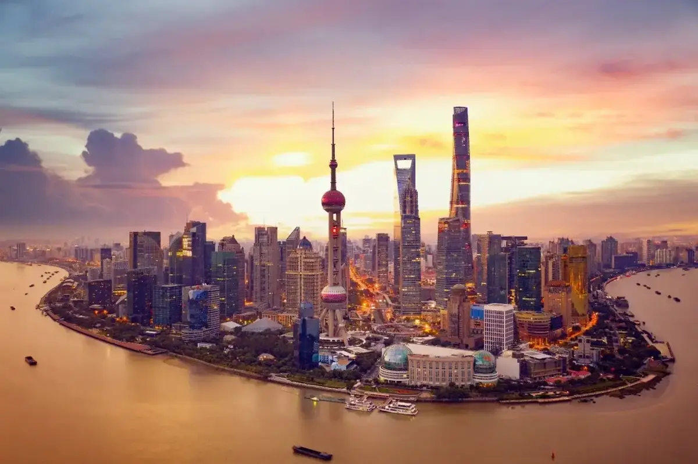

(ТЕКСТ И ФОТО):
Китай
О стране
Китай вызывает особый интерес у путешественников, ведь восточные легенды, таинственные дворцы, Великая Китайская стена и колоритная культура завораживают. Страна изобилует не только историческими и культурными, но и природными достопримечательностями. Знаменитые «парящие горы» и река Ли навсегда влюбляют путешественников в Поднебесную, а огромные мегаполисы с современными небоскребами и тысячами огней поражают воображение.
Общая информация
Самая большая азиатская страна омывается двумя морями и граничит со множеством среднеазиатских и южноазиатских стран. Одна из самых древних стран с богатейшей историей и привлекательной философией притягивает туристов со всего мира. Из-за протяженности страны климат в ней различается. Большая часть территории Китая покрыта горами, нагорьями и холмами. Невероятная природа, спокойствие величественных гор и шум огромных городов делают эту страну контрастов уникальной.
Экскурсионный
Количество исторических памятников и объектов культурного наследия в Китае поражает. Сюда приезжают ради знакомства с удивительной культурой и историей одной из самых древних цивилизаций. Такие достопримечательности как Терракотовая армия и Великая Китайская стена настолько легендарны, что путешественники всего мира стремятся их увидеть, чтобы убедиться в их существовании.
Городской
Шумные, большие и яркие города Китая переносят путешественников в мир будущего. В основном в мегаполисы приезжают на шопинг и ради городских развлечений, в том числе казино. Здесь можно погрузиться в бешеные ритмы китайской повседневности, посетить необычные локации, театры и музеи, поужинать на вершине небоскребов или отправиться в парки развлечений.
Пляжный
Южные курорты Китая славятся своим комфортом и атмосферой спокойствия. Чистые пляжи, свежие морепродукты и множество развлечений на тропическом острове Хайнань запоминаются надолго. Высокий уровень сервиса, развитая инфраструктура на пляжах и множество сочных фруктов украсят ваш отдых в Китае.
Гонконг

Общая информация
Отдельный административный округ и крупный экономический центр Китая. Богатый и дорогой мегаполис похож на сказочный мир с яркой подсветкой и домами, уходящими в небо. В Гонконге вы увидите, как живут китайцы в крупных городах, проникнетесь их культурой, посетите буддистские храмы и потрогаете облака на вершинах небоскребов.
Специальный административный округ Китая таит в себе невероятные технологии и памятники ушедших эпох. Здесь удивительным образом сочетаются современные ландшафты и древние застройки. Огромный мегаполис гостеприимно встречает туристов со всего мира и предлагает современные развлечения и погружение в культуру.
Гонконг напоминает целую страну со своим внутренним распорядком и удивительными достопримечательностями. В 18-и районах Гонконга, кажется, можно найти абсолютно всё: нетронутые тропические леса и зелёные парки, буддистские храмы, множество островов, европейскую архитектуру и колоритные трущобы. Тысячи огней, высокие небоскрёбы и восточная атмосфера современного мегаполиса никого не оставят равнодушным. Сюда можно приехать в любое время года, чтобы насладиться городским пространством. Летом здесь достаточно тепло — около 28–29 °С, а зимой температура может опуститься до 10 °С и даже до 0 °С. Гонконг находится в зоне влажных субтропиков, и потому осадки и туманы тут частое явление.
Городской
Сити-тур по Гонконгу — лучший вариант досуга. Здесь туристов ждут фантастические и футуристические городские ландшафты, древние храмы, буддистские монастыри и даже рыбацкие деревушки. В Гонконг приезжают за развлечениями в шумном мегаполисе и шопингом. Здесь даже есть китайский рынок подделок, куда туристы приходят ради колорита и ярких торговых рядов.
Коулун
Полуостров, на котором располагается город будущего, считается самым густонаселённым районом Гонконга. Здесь располагаются блестящие небоскрёбы, необычные музеи, буддистские храмы, живописные бухты, чистые пляжи и тропические парки. Коулун — идеальное место для знакомства с культурой. На каждом шагу туристов здесь ждут китайские ресторанчики и магазины.
Новые территории
Одна из трёх частей административного округа Гонконг — Новые Территории. Этот район огромного Гонконга поражает тем, что его построили всего за 20 лет. Масштабные территории, некогда дикие и пустынные превратились в престижные районы с новыми домами и набережными. Располагаются Новые Территории не только на материковой части Гонконга, но и на живописных зелёных островах, которые можно осмотреть во время морской прогулки.
Макао

Общая информация
Специальный административный район и азартная столица Китая. Китайский Лас-Вегас заманивает азартными играми и экзотичностью самого островного города. Здесь можно отправиться на морскую прогулку между островами, поужинать на вершине Macau Tower, осмотреть исторический центр с памятниками колониальных времен, посетить гоночную трассу «Гран-при Макао» и, конечно же, насладиться игрой.
Город-праздник притягивает как магнит туристов со всего мира. Сюда едут за развлечениями и беззаботным отдыхом. Количество казино и ночных клубов в Макао поражает. Кажется, что попадаешь в огромный парк развлечений, в котором веселье никогда не заканчивается.
Специальный административный район Макао расположен на берегу Южно-Китайского моря. Здесь чудесным образом переплетаются история и современность. Постройки времён колонизации гармонируют с футуристическими ландшафтами и подсвеченными небоскрёбами. Макао — мир казино, ради которого сюда приезжают тысячи туристов. Пятизвёздочные отели встречаются на каждом шагу, так как отдых в Макао принято проводить с шиком. Самое большое и популярное казино — «Венеция». В Макао приезжают в любой сезон, ведь развлечениям погода не помеха. Город-страна располагается в зоне субтропиков, здесь жаркое лето и относительно тёплая зима — 13–16 °С.
Городской
Тысячи огней, изысканная кухня и небоскрёбы на каждом шагу — таким представляется Макао путешественникам. В этом огромном городе каждый найдёт развлечение по душе и отличные места для фотосессий. Поскольку часть Макао находится на островах, здесь распространены переправы и морские прогулки. Этот город умеет удивлять и предлагает погрузиться в мир развлечений и азартных игр.
Колоан
Остров Колоан, пожалуй, самая нетронутая часть Макао. Сюда ещё не дошли новые технологии и современная архитектура. Колоан считается одним из самых популярных мест Китая — сюда приезжают погулять по эвкалиптовым рощам, отдохнуть на пляже и насладиться особенной кухней. Туристы здесь гуляют по многочисленным паркам, посещают буддистские храмы и отдыхают от городского шума Макао.
Котай
На остров Котай приезжают ради лучшего казино и самых больших игорных заведений. Если по центру Макао стоит погулять и посетить культурные места, то Котай буквально создан для погружения в игровую культуру. Помимо казино тут распространены ночные клубы. Здесь практически нет мест для прогулок, но зато есть огромное количество развлечений.
Тайпа
Остров недалеко от материковой части Макао — лучшее место для беззаботного отдыха. Здесь для туристов и местных жителей обустроен популярный одноимённый пляж. Именно на острове Тайпа находятся лучшие отели Макао с казино и торговыми центрами внутри. На острове располагается колоритная деревня Тайпа, в которой можно поближе познакомиться с эпохой португальской колонизации и китайской культурой.
Хайнань

Цветущий пляжный уголок большой страны привлекает любителей тропических фруктов и теплого моря. Местные отели поддерживают отличный уровень сервиса, а также предлагают экскурсии по острову, рафтинг и морские прогулки. Хайнань – самая южная провинция Китая, и соответственно здесь самый теплый и влажный климат. Путешественники наслаждаются здесь атмосферой спокойствия, прогулками по тропическим лесам, расслабляющим пляжным отдыхом и экзотической китайской кухней.
Пекин

Столица Поднебесной напоминает небольшую отдельную страну, ведь город настолько большой и густонаселенный, что здесь легко заблудиться. Именно в Пекине расположены легендарные достопримечательности Китая, такие как императорский дворцовый комплекс Запретный город и храм Неба. Огромное количество развлечений, живописных улиц, парков и храмов никого не оставят равнодушным. Здесь вы можете рискнуть заглянуть на пекинский рынок и посмотреть на экзотические китайские блюда.
Шанхай

Город будущего и состоятельных китайцев. Сюда, в разноцветный огромный Шанхай стремятся путешественники за новыми впечатлениями, шопингом и гастрономическим удовольствием. Здесь можно попробовать кухню разных регионов Китая, погулять по парку Юй-Юань и другим красивым местам города и отправиться в антикварные магазины за редкостями. Считается, что самые богатые люди страны живут в Шанхае, и здесь вы сможете найти множество заведений класса «суперлюкс».
Гуанчжоу
Третий по величине город Китая считается также его культурно-историческим центром. Зеленые парки с уютными беседками, огромное количество музеев, цирк, буддистские храмы и Жемчужная река ждут вас с Гуанчжоу. Также здесь обязательно нужно посетить парк развлечений «Chimelong Paradise», а затем отправиться изучать местные бутики и магазины. Для того чтобы достичь гармонии – посетите популярный храм Пяти духов и насладитесь уникальной атмосферой этого места.
Харбин

Город Харбин находится недалеко от границы с Россией на севере. Здесь проходит крупнейший в мире ледовый фестиваль – создается настоящий ледяной город. Однако зимы здесь очень суровые, и к ним следует готовиться. Харбин – отличное место для спокойного городского отдыха в живописных парках и для прогулок по экзотическим районам. Здесь следует посетить христианские и буддистские храмы, а также побывать в Парке тигров, где можно отправиться в сафари и увидеть уникальных амурских тигров вблизи.